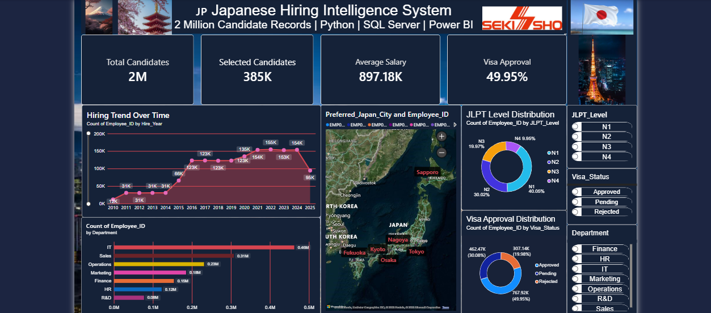
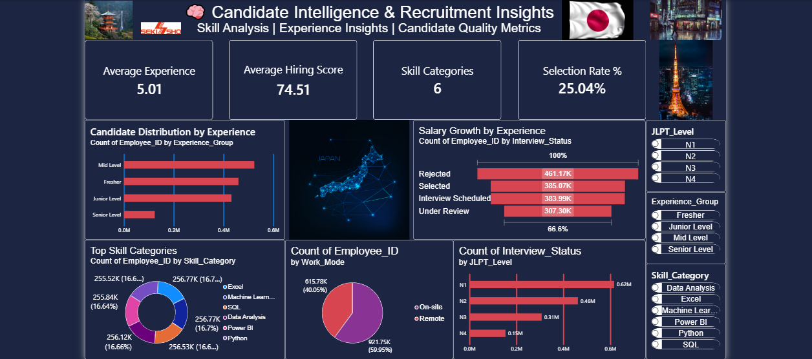
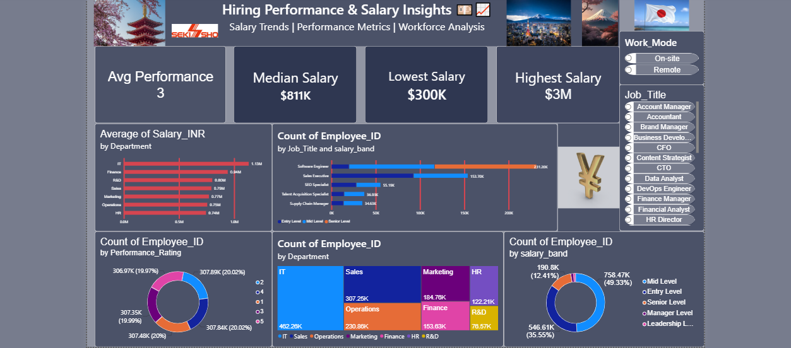

Enter the Data Realm
End-to-End Data Analytics Project analyzing 2M+ recruitment records using Python, SQL Server, Power BI, and Web Deployment.
Which departments hire the most candidates in Japan?
Does Japanese language proficiency affect selection rate?
Which roles offer the highest compensation?
How hiring score affects final selection?
Duplicates, null values, inconsistent salary formatting.
Optimized dataset ready for analytics pipeline.
Department-wise salary comparison using aggregation queries.
Candidate distribution across language levels.



Strong recruitment funnel performance.
Top compensation among departments.
Higher JLPT boosts selection chances.
Data Analyst Trainee | SQL | Python | Power BI | Excel